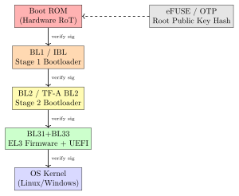
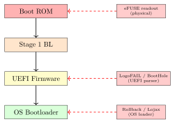

Chapter 8: Secure Boot¶
Note: Secure Boot establishes a cryptographically verified chain of trust from the hardware root of trust through each boot stage to the OS kernel. A break at any link compromises the entire chain.
8.1 Secure Boot Fundamentals¶
Secure Boot prevents execution of unauthorized firmware by verifying cryptographic signatures at each boot stage. The process begins at a hardware-immutable root of trust (RoT) – typically mask ROM or eFUSE-backed code – and extends trust to each successive boot stage through a chain of digital signatures.
8.1.1 Chain of Trust¶
A chain of trust consists of anchors and links. The anchor is a hardware-protected public key or hash stored in OTP/eFUSE memory. Each link is a digital signature verification step:
-
Boot ROM (hardware immutable) verifies Stage 1 Bootloader (BL1/IBL) signature
-
BL1 verifies Stage 2 Bootloader (BL2/U-Boot/TF-A BL2) signature
-
BL2 verifies BL31 (EL3 firmware) and BL33 (non-secure world loader)
-
BL33/UEFI verifies OS bootloader (GRUB/Shim/Windows Boot Manager)
-
OS bootloader verifies kernel image and initrd

8.1.2 Root of Trust Hardware¶
| Device | Vendor | RoT Type | Cert | Secure Storage |
|---|---|---|---|---|
| LPC55S69JBD100K | NXP | eFUSE + Secure Enclave | CC EAL5+ | 8 kB SRAM PUF |
| STM32L562QEI6Q | STMicro | TrustZone + eFUSE | CC EAL5+ | 512 kB Flash (TZ) |
| EFM32PG23B210 | Silicon Labs | SE + eFUSE | PSA L3 | 512 kB Flash |
| ATECC608B | Microchip | SE (ECC508A) | FIPS 140-2 | 10 kB EEPROM |
| i.MX 8M Plus | NXP | HABv4 + CAAM | – | eFUSE 1536 bit |
| BCM2711 (RPi4) | Broadcom | OTP boot key | – | OTP 256 bit |
| Xilinx Zynq UltraScale+ | AMD/Xilinx | CSU + RSA | – | eFUSE 256 bit |
| Lattice MachXO3D | Lattice | Secure Config | – | OTP 4 kB |
8.2 ARM Trusted Firmware-A Boot Stages¶
ARM TF-A implements four secure boot stages (BL1–BL4) defined in the Trusted Board Boot Requirements (TBBR) specification. Each stage uses X.509 certificates with RSA-2048 or ECDSA-P256 signatures.
8.2.1 BL1: Bootloader Stage 1¶
BL1 executes from secure Boot ROM at EL3 (Exception Level 3, the highest privilege). It initializes SRAM, configures the Memory Management Unit (MMU) trust zone partitions, and verifies BL2 using the Root of Trust Public Key (ROTPK) hash stored in eFUSE.
/* TF-A: bl1/bl1_main.c - verify BL2 image */
#include "auth_mod.h"
#include "crypto_mod.h"
int bl1_load_bl2(void) {
bl_mem_params_node_t *bl2_node;
int ret;
/* Load BL2 image to secure SRAM */
bl2_node = get_bl_mem_params_node(BL2_IMAGE_ID);
ret = load_image(bl2_node, BL2_IMAGE_ID);
if (ret != 0) return ret;
/* Verify BL2 certificate chain */
/* ROTPK hash compared against eFUSE[127:0] */
ret = auth_mod_verify_img(BL2_IMAGE_ID,
&bl2_node->image_info);
if (ret != 0) {
/* Halt: signature verification failed */
plat_error_handler(ret);
}
return 0;
}
/* Crypto backend: MbedTLS with RSA-2048 or ECDSA-P256 */
/* Certificate: X.509v3 with SubjectPublicKeyInfo extension */
8.2.2 UEFI Secure Boot¶
UEFI Secure Boot (UEFI Spec 2.9, Section 32) validates UEFI drivers and OS bootloaders against the Signature Database (db) and Forbidden Signature Database (dbx). Keys are stored in NVRAM authenticated variables protected by the Platform Key (PK).
| Variable | Key Type | Purpose |
|---|---|---|
| PK (Platform Key) | RSA-2048 X.509 | OEM root key; controls KEK enrollment |
| KEK (Key Exchange Key) | RSA-2048 X.509 | Microsoft/OEM; controls db/dbx updates |
| db (Signature DB) | RSA-2048 or SHA-256 | Allowed signers for UEFI binaries |
| dbx (Forbidden DB) | SHA-256 hashes | Revoked bootloaders (e.g., vulnerable GRUB) |
| MOK (Machine Owner Key) | RSA-2048 | User-enrolled keys via MokManager/shim |
Warning: The BootHole vulnerability (CVE-2020-10713) allowed arbitrary code execution via a malformed grub.cfg despite Secure Boot. Microsoft issued dbx revocations for 150+ vulnerable GRUB2 hashes. Always keep dbx updated.
8.2.3 Android Verified Boot 2.0 (AVB2)¶
Android AVB2 uses a Verified Boot Metadata (VBMeta) structure containing SHA-256 digests of each partition (boot, system, vendor, dtbo). The VBMeta structure is signed with ECDSA-P256 and the public key is stored in eFUSE.
dm-verity: The Linux kernel device mapper target validates each 4 kB block of the system partition against a SHA-256 hash tree (Merkle tree). Root hash stored in VBMeta. Any tampered block causes a kernel panic and automatic reboot to recovery.
Rollback Protection: AVB2 stores partition version numbers in Replay Protected Memory Block (RPMB) – a dedicated authenticated region of eMMC/UFS. Downgrade attacks to vulnerable firmware versions are blocked.
8.3 MCUboot Secure Boot for Embedded Systems¶
MCUboot is an open-source bootloader for Cortex-M microcontrollers. It supports RSA-2048, ECDSA-P256, and Ed25519 image signing with SHA-256 hash verification.
#include "bootutil/bootutil.h"
#include "bootutil/image.h"
#include "bootutil/sign_key.h"
/* Image header: magic(4), load_addr(4), hdr_size(2),
img_size(4), flags(4), version(8), pad(4) = 32 bytes */
int boot_verify_image(const struct image_header *hdr,
const struct flash_area *fa) {
struct image_tlv_iter it;
uint8_t hash[32];
uint8_t sig[72]; /* ECDSA-P256: max 72 bytes DER */
uint16_t len;
/* Step 1: Compute SHA-256 over header + payload */
bootutil_sha256_context sha_ctx;
bootutil_sha256_init(&sha_ctx);
bootutil_sha256_update(&sha_ctx, hdr, sizeof(*hdr));
/* ... update with image payload ... */
bootutil_sha256_finish(&sha_ctx, hash);
/* Step 2: Find ECDSA-P256 signature in TLV trailer */
boot_tlv_iter_begin(&it, hdr, fa);
while (boot_tlv_iter_next(&it, IMAGE_TLV_KEYHASH, &len, sig) == 0) {
/* Step 3: Verify against embedded public key */
if (bootutil_ecdsa_p256_verify(&bootutil_keys[0],
hash, 32, sig, len) == 0)
return 0; /* Verified */
}
return BOOT_EBADIMAGE;
}
Tip: MCUboot supports both single-image (primary only) and dual-image (primary + secondary upgrade slot) configurations. Use CONFIG_BOOT_VALIDATE_SLOT0 to re-verify the primary slot on every boot, not just after upgrade.
8.4 FPGA Secure Boot Implementation¶
FPGA vendors implement secure boot via bitstream encryption and authentication.
8.4.1 Xilinx Zynq UltraScale+ Secure Boot¶
The Zynq UltraScale+ MPSoC (ZU3EG, ZU9EG) Configuration Security Unit (CSU) supports RSA-4096 (boot image authentication) and AES-256-GCM (bitstream encryption). eFUSE stores 256 bits: RSA public key hash (SHA3-384), AES key, and security control bits.
| Platform | Method | LUTs | BRAMs | Boot Time (ms) |
|---|---|---|---|---|
| Zynq UltraScale+ ZU9EG | RSA-4096 + AES-256 | HW CSU | – | 180 |
| Xilinx Artix-7 XC7A100T | AES-256-CBC (BBRAM) | 0 (HW) | – | 45 |
| Lattice MachXO3D | ECDSA-P384 + AES-128 | 0 (HW) | – | 12 |
| Intel Arria 10 GX | AES-256-CBC (eFUSE) | 0 (HW) | – | 230 |
| Xilinx Spartan-7 | AES-256-CBC (eFUSE) | 0 (HW) | – | 35 |
| Soft IP (FPGA fabric) | ECDSA-P256 SW | 18,500 | 12 | 2,400 |
Xilinx Secure Boot Flow: Bootgen tool (\(texttt{bootgen -image boot.bif -arch zynqmp -o BOOT.BIN}\)) creates signed/encrypted BOOT.BIN. BIF file specifies: authentication=rsa, encryption=aes, keysrc=efuse, pskfile=psk.pem.
8.4.2 Lattice MachXO3D Secure Configuration¶
The MachXO3D (LCMXO3D-9400HC) is purpose-built for secure configuration of host FPGAs. It features: 4 kB OTP for root keys, ECDSA-P384 authentication, AES-128-CCM encryption, active monitoring (unauthorized configuration attempt triggers erasure), and SPI master for host FPGA configuration.
Note: Lattice MachXO3D is the recommended solution for protecting Artix-7/Kintex-7 bitstreams that lack hardware ECDSA support. It acts as a Secure Configuration Manager with hardware-enforced chain of trust.
8.5 ASIC Secure Boot Implementation¶
ASIC secure boot integrates the root of trust directly into silicon.
| Device | Process | Auth Algorithm | Area (kGE) | Power (mW) |
|---|---|---|---|---|
| NXP LPC55S69 (ROM) | 40nm LP | ECDSA-P256 + SHA-256 | 48.0 | 1.2 |
| STM32L562 (SBSFU) | 40nm LP | RSA-2048 + SHA-256 | 62.0 | 1.8 |
| Silicon Labs EFM32PG23 | 40nm LP | ECDSA-P256 | 38.5 | 0.9 |
| Microchip ATECC608B | 40nm LP | ECDSA-P256 (SE only) | 22.0 | 0.6 |
| i.MX 8M Plus HABv4 | 28nm FDSOI | RSA-4096 + SHA-256 | 95.0 | 3.1 |
8.5.1 NXP LPC55S69 Secure Boot Configuration¶
The LPC55S69 (Cortex-M33, 150 MHz, 40nm LP) uses the PRINCE hardware encryption engine for execute-in-place (XIP) Flash encryption and the S50 Secure Element for ECDSA key storage. The CMPA (Customer Manufacturing Programming Area) in eFUSE stores the ROTKH (Root of Trust Key Hash – SHA-256 of four ECDSA-P256 public keys).
/* NXP MCUXpresso SDK: secure_provisioning example */
#include "fsl_iap_ffr.h"
#include "fsl_iap.h"
/* Customer Manufacturing Programmed Area (CMPA) layout */
typedef struct {
uint8_t rotkh[32]; /* SHA-256 of 4 ROTPK concatenated */
uint32_t cc_socu_pin; /* CPU Security Override Pin */
uint32_t cc_socu_dflt; /* CPU Security Override Default */
uint8_t vendor_usage[4]; /* User-defined boot flags */
} cmpa_t;
void provision_secure_boot(void) {
cmpa_t cmpa;
flash_config_t flash;
FFR_Init(&flash);
/* Compute SHA-256(ROTPK0 || ROTPK1 || ROTPK2 || ROTPK3) */
sha256_compute(rotpk_array, 4*64, cmpa.rotkh);
/* Lock: CMPA is OTP -- one-time write */
FFR_CustFactoryExpProgram(&flash, (uint8_t*)&cmpa,
sizeof(cmpa), 0, true);
}
8.6 Secure Boot Attack Vectors¶
| Attack | CVE | Mitigation |
|---|---|---|
| BootHole (GRUB2 buffer overflow) | CVE-2020-10713 | dbx revocation, shim update |
| LogoFAIL (UEFI image parser) | CVE-2023-40238 | UEFI firmware update, parser hardening |
| Spectre-v2 in UEFI | CVE-2017-5715 | IBRS/RETPOLINE in UEFI firmware |
| ThinkPwn (UEFI SMM) | CVE-2016-4956 | SMM lockdown, BIOS_WP bit |
| UEFI rootkit (Lojax) | – | Secure Boot + UEFI firmware signature |
| Rollback attack | – | Anti-rollback counter in RPMB/eFUSE |
| Cold boot attack | – | Memory encryption (AMD SME, Intel TME) |
| DMA attack via Thunderbolt | CVE-2020-14368 | IOMMU, Kernel DMA protection |

8.7 Anti-Rollback and Measured Boot¶
8.7.1 Anti-Rollback Counters¶
Anti-rollback prevents downgrade attacks to vulnerable firmware. Counters stored in write-once OTP or RPMB:
-
eFUSE counter: Each version permanently increments one eFUSE bit. 32-bit counter supports 32 versions. Used by NXP i.MX, Qualcomm Snapdragon.
-
RPMB counter: eMMC/UFS RPMB stores 32-bit counter with HMAC-SHA-256. Unlimited counter values. Used by Android AVB2.
-
TPM NV counter: TPM 2.0 NV index with NV_COUNTER attribute per TCG PC Client Platform Firmware Profile.
8.7.2 TPM 2.0 Measured Boot¶
Measured Boot (TCG specification) extends SHA-256 hashes of each boot component into TPM Platform Configuration Registers (PCRs). Unlike Secure Boot (enforcement), Measured Boot records what booted for later attestation.
Tip: PCR allocation per TCG PC Client PFP: PCR0=UEFI firmware, PCR1=UEFI config, PCR2=drivers/ROMs, PCR4=MBR/GPT/bootloader, PCR7=Secure Boot state, PCR11=kernel+cmdline (systemd-boot). Always seal disk encryption keys to PCR7+PCR11 minimum.
8.8 Secure Boot Standards¶
| Standard | Scope | Key Requirement |
|---|---|---|
| NIST SP 800-147B | BIOS/UEFI | Platform firmware integrity, secure update protocol |
| NIST SP 800-155 | BIOS | BIOS integrity measurement using TPM PCRs |
| FIPS 140-3 AS 10.35 | Crypto module | Firmware load-time integrity test |
| CC EAL5+ (PP 0084) | Secure IC | ALC_FLR, firmware update policy |
| PSA Certified L2 | IoT MCU | Secure boot + anti-rollback + attestation |
| TCG PC Client PFP | UEFI/TPM | PCR assignments and event log format |
| Android CDD 9.10 | Android | AVB2 mandatory for Android 10+ devices |
| SESIP Level 3 | IoT | Secure boot with tamper-evident key storage |
8.9 Solved Problems¶
Solved Problem: Chain of Trust Hash Computation
A Zynq UltraScale+ stores SHA3-384 (48 bytes) in 256-bit eFUSE. Is there enough space? Propose a solution if not. Solution: SHA3-384 = 384 bits; eFUSE = 256 bits. Deficit = 128 bits. Solution: Use SHA-256 of RSA-4096 public key (256 bits). This fits exactly and provides 128-bit pre-image security – sufficient for RSA-4096. Zynq UltraScale+ ZU+ CSU recommends SHA-256 ROTPK hash stored in eFUSE[255:0]. Conclusion: Use SHA-256 for ROTPK hash in 256-bit eFUSE devices. SHA3-384 requires dedicated 384-bit eFUSE or a 512-bit array split between ROTPK (256 bits) and flags (256 bits).
Solved Problem: Anti-Rollback Counter Capacity Planning
A 512-bit eFUSE device allocates 256 bits for ROTPK hash. Anti-rollback uses 1 bit per firmware version. The device needs at least 20 updates over 10 years. Calculate available anti-rollback capacity and propose optimal allocation. Solution: Remaining bits after ROTPK: \(512 - 256 = 256\) bits. Anti-rollback at 1 bit per version: 256 versions supported (exceeds 20-version requirement by 12x). Recommended allocation:
-
ROTPK SHA-256: 256 bits
-
Anti-rollback counter (32 versions): 32 bits
-
JTAG/debug disable flags: 8 bits
-
Secure world enable / boot mode: 8 bits
-
Customer lot ID: 32 bits
-
Reserved: 176 bits
Conclusion: 512-bit eFUSE provides comfortable headroom for all secure boot metadata. NXP LPC55S69 CMPA and STM32L562 RDP both use 512-bit eFUSE arrays as the practical minimum.
Solved Problem: UEFI dbx Update Authentication
BootHole (CVE-2020-10713) requires revoking 150 GRUB2 hashes via dbx update. Describe: (a) authentication mechanism, (b) replay attack prevention, (c) dual-boot impact and remediation. Solution: (a) Authentication: dbx uses EFI_VARIABLE_AUTHENTICATION_2. The update package contains new dbx content + AuthInfo = timestamp, CMS SignedData signed with KEK private key. UEFI verifies the KEK signature (Microsoft KEK CA certificate in NVRAM KEK variable).
(b) Replay prevention: EFI_VARIABLE_TIME_BASED_AUTHENTICATED_WRITE_ACCESS requires timestamp in AuthInfo to be strictly greater than stored timestamp. Old dbx updates with smaller timestamps are rejected.
(c) Dual-boot remediation: Before applying dbx update:
-
Update shim to shim-15.4+ (patched, newly signed)
-
Update GRUB2 to patched version (signed with valid certificate)
-
Confirm new binary hashes are in db (allowed list)
-
Apply dbx update (adds 150 old hashes to forbidden list)
Conclusion: Proper Secure Boot key management requires coordinated update of db (allow new binaries) before dbx (revoke old binaries) to prevent locking out the system.
Solved Problem: TPM PCR Sealing for Kernel Update
A Linux server seals the LUKS key to PCR7 (Secure Boot) and PCR11 (kernel+cmdline). The kernel is updated. Which PCRs change? What procedure prevents losing disk access? Solution: PCR impact: PCR11 changes (new kernel hash), PCR7 unchanged (Secure Boot db unchanged if new kernel is properly signed).
Sealed LUKS key bound to old PCR11 cannot be unsealed after update. Required procedure:
-
Compute expected new PCR11:
systemd-measure calculate --linux=new-vmlinuz -
Re-seal to new policy:
systemd-cryptenroll --tpm2-pcrs=7+11 /dev/sda1 -
Apply kernel update
-
Verify:
tpm2_pcrread sha256:7,11
Conclusion: Pre-update re-sealing is mandatory. Systemd 250+ systemd-cryptenroll automates PCR policy updates by computing expected post-update PCR values from the new kernel image.
8.10 Recent Developments (2024–2026)¶
8.10.1 BlackLotus UEFI Bootkit and CVE-2023-24932¶
BlackLotus is the first in-the-wild UEFI bootkit capable of bypassing UEFI Secure Boot on fully patched Windows 11 systems, discovered in early 2023:
-
Exploit: Exploits CVE-2022-21894 (“Baton Drop”) – a signed but revocable Windows Boot Manager (
bootmgfw.efi) with a flaw in Secure Boot policy processing; attacker boots via the old vulnerable signed binary -
Persistence: Installs a modified shim in the EFI system partition; disables Windows Defender by patching the running kernel; persists across Windows reinstallation
-
CVE-2023-24932: Microsoft’s fix requires updating the Secure Boot DBX (forbidden database) to revoke the vulnerable boot manager hashes
-
Deployment complexity: DBX update required coordinated action across Microsoft, all Linux distributions (GRUB/shim), and BIOS vendors to avoid rendering dual-boot systems unbootable
-
Status: Full DBX revocation completed in stages (2023–2024);
ms-windows-bootkit-revocation-update-kb5025885mandatory by May 2024
Warning: BlackLotus demonstrated that Secure Boot’s security depends entirely on the freshness of the DBX revocation database. A Secure Boot configuration with a stale DBX (missing recent revocations) provides no protection against signed-but-vulnerable bootloaders. Monitor https://uefi.org/revocationlistfile for current DBX updates.
8.10.2 Shim RCE Vulnerability: CVE-2023-40547¶
CVE-2023-40547 is a critical heap buffer overflow in shim (the first-stage UEFI bootloader for Linux distributions) affecting virtually all major Linux distributions:
| Field | Details |
|---|---|
| CVE | CVE-2023-40547 (CVSS 9.8 Critical) |
| Affected | shim \(\leq\) 15.7; all major Linux distros (RHEL, Ubuntu, Debian, SUSE) |
| Root cause | Integer overflow in parse_boot_filename() when parsing HTTP boot URL from DHCP option; writes past a heap buffer |
| Exploit vector | Network boot (PXE/HTTP Boot) – attacker controls DHCP server on LAN |
| Effect | Arbitrary code execution during UEFI pre-boot; bypasses Secure Boot |
| Fix | shim 15.8 (February 2024); requires Secure Boot DBX update + distro shim update |
Note: CVE-2023-40547 is exploitable without physical access via network boot (HTTP Boot over PXE). Enterprise environments enabling Preboot Execution Environment must apply shim 15.8 and the corresponding DBX revocation immediately.
8.10.3 AMD Platform Secure Boot Updates (2024)¶
AMD Platform Secure Boot (PSB) – the AMD equivalent of Intel TXT/BIOS Guard – received significant updates in AGESA firmware versions released in 2024:
-
PSB v2 (AGESA 1.2.x): Extends the measurement chain from PSP (Platform Security Processor) to cover the UEFI Secure Boot database state (PK, KEK, DB, DBX); PCR[7] equivalent in PSP measurement log
-
fTPM rollback resistance: PSB v2 enforces anti-rollback for AMD PSP firmware via a dedicated counter in SPI flash; prevents faulTPM-style downgrade to vulnerable PSP firmware versions
-
Pluton integration: On Ryzen 6000+ with Pluton enabled, PSB hands off measured boot attestation to Pluton at Layer 1; eliminates PSP as single point of trust
-
Linux AMD-SP driver: Kernel 6.7+ includes
amd-spdriver updates for PSB attestation report retrieval via/dev/amd-sp0
8.10.4 NIST SP 800-147C Draft: BIOS/UEFI Protection (2024)¶
NIST released the SP 800-147C draft in Q1 2024, updating the 2011 SP 800-147 to address modern UEFI threats:
| Section | Requirement |
|---|---|
| 4.1 | Authenticated firmware update: RSA-2048 or ECDSA-P384 minimum; SHA-256 |
| 4.2 | Immutable RoT: Boot ROM cannot be modified post-manufacture |
| 4.3 | Anti-rollback: Firmware version counter in write-once OTP or TPM NV |
| 4.4 | DBX freshness: Systems must support automated DBX revocation list updates |
| 4.5 | Measured boot: All boot components extended to TPM PCRs or equivalent RoT |
| 5.1 | PQC readiness: Systems shipping after 2026 should support ML-DSA boot signatures |
8.10.5 Secure Boot for RISC-V (UEFI Forum Specification, 2023)¶
The UEFI Forum published the RISC-V UEFI Secure Boot Specification in 2023, enabling standardised chain-of-trust for RISC-V platforms:
-
M-mode RoT: Specifies how M-mode firmware (OpenSBI) acts as the hardware root of trust; extends hash of S-mode (U-Boot/UEFI) to a RISC-V equivalent of PCR[0]
-
UEFI Secure Boot variables: PK/KEK/DB/DBX stored in authenticated UEFI variables backed by M-mode protected NV storage
-
Platform: VisionFive 2 (SiFive U74), SiFive HiFive Premier P550 (P650 core) first platforms with RISC-V UEFI Secure Boot in 2024
-
EDK2 support: TianoCore EDK2 commit range includes RISC-V Secure Boot driver (
OvmfPkg/RiscVVirt) for QEMU and silicon targets
8.10.6 Google Verified Boot 2.0 for Android 14 (2023)¶
Android 14 introduced improvements to AVB 2.0 and the Verified Boot 3 roadmap:
-
Incremental Merkle tree updates: dm-verity hash tree now supports sparse verification for OTA updates, reducing reboot time for large partitions by computing only the changed subtree branches
-
Virtual A/B OTA + AVB: Combined seamless OTA with AVB; the update partition is dm-verity verified before the device switches slots
-
Rolling code signing: Device-unique ephemeral signing keys (derived from Titan M2 HWK) supplement the Google/OEM signing chain for enhanced anti-cloning
-
Verified Boot 3 (preview): Moves VBMeta signing to a per-build ephemeral key; root-of-trust remains Titan M2; enables reproducible-build verification
Tip: Android developers should target android.hardware.boot@2.0 HAL for Verified Boot 3 readiness. The avbtool make_vbmeta_image now supports --algorithm ML_DSA_65 in the AOSP experimental branch for future PQC migration.
8.11 Exercises¶
Exercises
-
Explain the difference between Secure Boot (enforcement) and Measured Boot (attestation). Give a scenario where Measured Boot is preferred over Secure Boot.
-
NXP LPC55S69 stores four ECDSA-P256 ROTPK hashes in eFUSE. Why four keys instead of one? Describe the key revocation procedure.
-
Describe ARM TF-A BL1 through BL33. What exception level does each run at? What does each verify and load next?
-
The Lojax UEFI rootkit (2018) persisted in UEFI NVRAM. What Secure Boot property failed? What additional protection (BIOS_WP, write-protect pin) would have blocked it?
-
Android AVB2 uses dm-verity with a Merkle hash tree. How many SHA-256 hashes are needed for a 4 GB system partition with 4 kB blocks? How is a tampered block detected?
-
An unsigned bootloader update is attempted. Explain step-by-step how Secure Boot blocks execution. What error is logged and where is the recovery path?
-
Compare RSA-2048, ECDSA-P256, and Ed25519 for secure boot signatures. Compare: signature size, verification time on Cortex-M33 at 64 MHz, and key storage size.
-
A device has 256-bit eFUSE with 32 bytes for ROTPK and 4 bytes for binary version counter. What is the maximum firmware version supported? Is this sufficient for a 10-year product?
-
Explain BootHole (CVE-2020-10713). What GRUB2 buffer overflow was exploited? Why did Secure Boot not prevent it despite the binary being signed?
-
Lattice MachXO3D acts as Secure Configuration Manager. Describe: (a) AES key storage, (b) what triggers bitstream erasure, (c) why preferred over BBRAM.
-
Design an MCUboot configuration for a Cortex-M33 (512 kB Flash) with ECDSA-P256 and anti-rollback. Specify: slot layout, signature location in TLV trailer, key provisioning procedure.
-
Describe TPM 2.0 remote attestation. What is an AIK? How does the verifier check a PCR quote? What prevents replay of an old quote from a known-good machine?